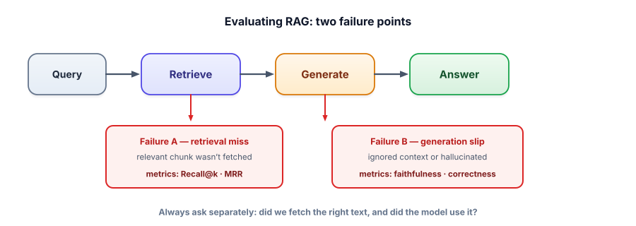

Evaluating retrieval quality
This is the lesson that turns RAG from guesswork into engineering. Without measurement you’re tuning chunk sizes and rerankers by vibes. With it, every change is a number that went up or down — and you finally know whether you’re improving.
Why you must measure, and what to measure
RAG can fail in two distinct places, and confusing them wastes weeks. Either retrieval failed (the right chunk never reached the prompt) or generation failed (the right chunk was there but the model ignored it or hallucinated). The fixes are completely different — better chunking/embeddings/reranking vs better grounding/prompting — so the first job of evaluation is to tell these apart.

A golden set is a small labeled dataset of queries paired with the chunk(s) that should be retrieved (and ideally a correct answer). On it you compute retrieval metrics: recall@k (did the relevant chunk appear in the top k?), precision@k (what fraction of the top k were relevant?), and MRR (mean reciprocal rank — how high up the first relevant chunk was, rewarding good ordering). For the answer you add end-to-end metrics: faithfulness (supported by context?) and answer correctness/relevance.
Play with the metrics
Toggle which retrieved results are actually relevant and watch the metrics move. Build the intuition for what each one rewards.
Retrieval-metrics calculator
Click a result to toggle relevant/not. Set how many relevant chunks exist in total, and the cutoff k.
A dozen labeled queries is enough to start. Compute recall@k and MRR, then change one knob and see if the number moves.
# golden[query] = set of chunk ids that *should* be retrieved
golden = {
"how long is the warranty?": {"warranty#0"},
"can I return it?": {"returns#0"},
"how do I cancel billing?": {"billing#2"},
}
def evaluate(retrieve, golden, k=5):
recall_hits, rr_sum = 0, 0.0
for q, relevant in golden.items():
ranked = retrieve(q, k) # list of chunk ids, best first
if relevant & set(ranked): # did we get a relevant one in top k?
recall_hits += 1
for rank, cid in enumerate(ranked, start=1): # reciprocal rank of first hit
if cid in relevant:
rr_sum += 1.0 / rank
break
n = len(golden)
return {"hit_rate@k": recall_hits / n, "MRR": rr_sum / n}
print(evaluate(my_retriever, golden, k=5)) # {'hit_rate@k': 1.0, 'MRR': 0.83}
# Now change chunk size OR add reranking, re-run, and compare the numbers.This tiny harness is the engine of all RAG improvement: change one variable, re-measure, keep it only if the metric improved. It’s also the seed of Track 6 (Evals), which generalizes this to whole LLM systems.
- RAG fails at retrieval or generation — measure them separately, they have different fixes.
- A small golden set (queries → relevant chunks) unlocks real numbers; you don’t need thousands.
- Recall@k = did we fetch it; precision@k = how clean the top-k is; MRR = how high the first hit ranked.
- Add faithfulness and answer correctness for end-to-end quality.
- The loop: change one knob → re-measure → keep or revert. That’s how RAG actually improves.
Your golden-set evaluation shows recall@10 = 0.95 but faithfulness = 0.55. Where is the problem, and what do you fix?
1. Recall@5 is 0.98 but MRR is 0.30. What does that combination tell you, and what would you add?
2. How would you build a golden set quickly for a new internal-docs RAG, without a labeling team?
3. You improve chunk overlap and recall@5 goes from 0.80 → 0.91, but answer correctness is unchanged. What might be happening?
▸ Show solutions & reasoning
1. High recall but low MRR means the relevant chunk is almost always retrieved but ranked low in the top 5 — so if you only feed the model the top 1–2, it often misses it. The fix is a reranker (Lesson 3.5) to push the relevant chunk to the top, raising MRR. Recall and MRR together tell you “found it” vs “found it and ranked it well.”
2. Bootstrap it: take real user questions (or have an LLM generate plausible questions from each document), and label the obviously-correct chunk for each — even 20–50 pairs is enough to start measuring. You can also use an LLM to draft candidate (query, relevant-chunk) pairs and then spend a little human time verifying them. A small, honest golden set beats a large unmeasured guess.
3. Likely the generation step is now the bottleneck: you’re retrieving the right chunk more often (recall up), but the model isn’t turning that into a better answer — pointing at grounding/prompting or answer-extraction issues, not retrieval. This is exactly why you measure retrieval and end-to-end correctness separately: improving one stage only helps if it was the limiting one. Time to look at faithfulness and the prompt.
The teams that ship great RAG aren’t smarter about embeddings — they have a faster measurement loop. The flywheel: collect real queries (and failures) from production, fold the tricky ones into your golden set, then for every proposed change — new chunker, different embedding model, added reranker, hybrid search, prompt tweak — run the same evaluation and accept only changes that move the metric. Because you measure retrieval and generation separately, you always know which knob to turn. This converts an intimidating space of options into a disciplined, almost boring, optimization.
Two practical notes. For the generation side, exact-match scoring is too brittle for free-text answers, so faithfulness and correctness are increasingly judged by an LLM-as-judge — a model scoring whether the answer is supported and correct given the context. That technique (and its pitfalls) is the heart of Track 6, and frameworks like Ragas package these RAG metrics for you. And beware of evaluating on your training examples: keep a held-out set the system was never tuned on, or you’ll fool yourself with numbers that don’t generalize. Measurement is only useful if it’s honest.
You’ve built RAG end to end and learned to measure it. Time to pressure-test the whole track the way an interviewer would. On to the Track 3 interview check.